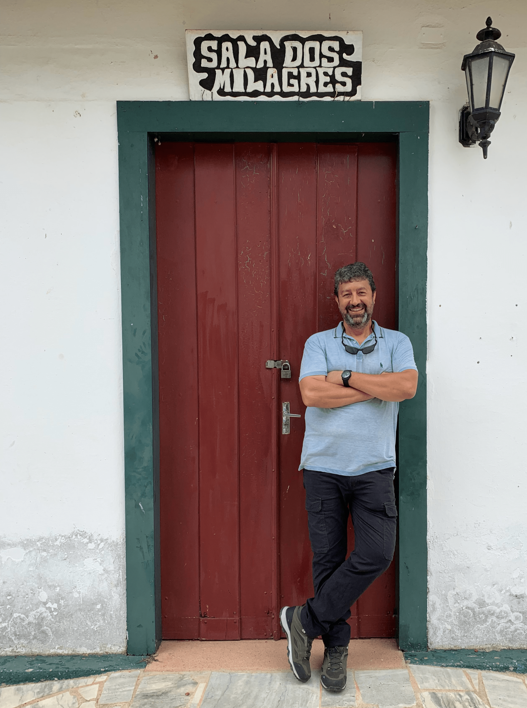

| Rafael de Andrade Moral | |
| Rafael is a Professor of Statistics at Maynooth University. He holds a BSc in Biology and a PhD in Statistics from University of São Paulo, Brazil. He really enjoys teaching and doing research related to the development and application of statistical modelling techniques to Ecology, Wildlife Management, and Agriculture. Besides his work in academia, he enjoys playing guitar and writing music, as well as performing magic tricks. Last, but not least, he loves German Shepherd dogs! | |
| Niamh Mimnagh | |
| Having obtained a BSc in Applied Mathematics, an MSc in Data Science and Analytics, and a PhD in Statistics, Niamh’s research interests include the development of statistical modelling techniques, their applications in ecology, and their implementation using the statistical programming language R. Of particular interest are statistical modelling techniques which enable the estimation of abundance in animal communities. | |
| Gabriel Rodrigues Palma | |
| Gabriel graduated with first-class honours Bsc Biological Sciences from the University of São Paulo. Since starting his undergraduate degree, he has participated in several projects involving statistics, mathematical modelling and machine learning. Thanks to these opportunities, he has come to love being involved in multidisciplinary projects that focus on ecological and entomological research. He is currently a PhD researcher in Statistical Ecology in the Hamilton Institute of Maynooth University, funded by Science Foundation Ireland’s Centre for Research Training in Foundations of Data Science programme. His PhD project is entitled “Predicting pest outbreaks: Comparing machine learning methods and alert zone procedures”. | |
| Darshana Jayakumari | |
| Darshana has a BTech in Electrical Engineering and Electronics, an MTech in Biomedical Engineering and a PhD in Statistics. She has worked with many research institutes on the underlying mechanisms of neural behaviour using functional MRI data, to which she applied different classical and machine learning methods. She is interested in applying machine learning methods to solve real-life problems. Her current work involves the analysis of extreme weather data, as part of her postdoctoral research at Met Eireann. In her free time, she loves exploring nature. | |
| Blake McGrane-Corrigan | |
| Blake graduated with a first-class honours BSc in Applied Mathematics from Maynooth University. He obtained an Applied Mathematics PhD, funded by an IRC scholarship, within the Mathematics and Statistics Department of Maynooth University. His current main interests include matrix theory, population persistence, stability theory, the joint spectral radius and models of dispersal. He is currently a postdoctoral scholar at University College Dublin. Outside of research he enjoys art, poetry, bouldering, basketball and hiking. | |
| Conor Hackett | |
| Conor studied Computer Science and Software Engineering at National University of Ireland Maynooth, completing a Bachelor of Science (Hons) in 2021. He has experience in the research area of disease modelling using geographic data. He is a PhD student in the Science Foundation Ireland’s Centre for Research Training in Foundations of Data Science programme. In the future he hopes to continue research in this field and expand his focus to ecological issues such as the spread of invasive species. | |
| Rachel McInerney | |
| Rachel holds a BSc in Applied Mathematics and Statistics, and is currently a PhD student in Maynooth University, supervised by Rafael de Andrade Moral and Julien Mainguy. Her research project is based on developing and applying novel statistical tools to assess variation in biodemographic components in fisheries to aid management practices. She aims to create a new package in R to aid the analysis of fisheries-related data, motivated by surveys carried out by the Ministère de l’Environnement, de la Lutte contre les changements climatiques, de la Faune et des Parcs, Québec, Canada. | |
| Jéssica Abonizio Gouvea | |
| Jéssica has a BSc in Biology and an MSc in Animal Biology, both from São Paulo State University. She has participated in ecological modelling projects, having worked in several projects involving environmental suitability, occupancy estimation and modelling of medium to large-sized mammals. She is currently a PhD researcher in Applied Ecology at University of São Paulo, Brazil, funded by Coordination for the Improvement of Higher Education Personnel and São Paulo Research Foundation. Jessica’s research interests include the development and validation of statistical models to estimate the population density of giant anteaters from scats and other vestiges. Her other interests include demography, genetics and resource use by mammals. | |
| Isabella Bueno | |
| Isabella graduated Bsc Biological Sciences from the São Paulo State University and an MSc in Entomology from the University of São Paulo. She is currently a Ph.D. researcher in the Entomology and Acarology department, University of São Paulo, working under the supervision of Dr. Wesley Augusto Conde Godoy. Her main research interests are the behavioral ecology of ants, mainly related to social immunity. She is interested in multidisciplinary projects involving statistics, ecology, and entomology. Her Ph.D. project is entitled “Behavioral and microbial ecology in Atta sexdens colonies: modeling defensive microbiological responses” funded by National Council for Scientific and Technological Development, Brazil. She loves cats and cycling. | |
| Guilherme Cavicchioli da Silva | |
| Guilherme has a BSc in Biological Science from Santo Amaro University and MSc in Ecology and Evolution from São Paulo Federal University. He has worked as a field ornithologist and has acquired solid experience working in the Atlantic forest, Cerrado and Amazon biomes. He is a doctoral student in Applied Ecology at the University of São Paulo, Brazil and is funded by Coordination for the Improvement of Higher Education Personnel and São Paulo Research Foundation. Guilherme’s research focus is on how to optimize and improve sample efforts on passive acoustic monitoring for measuring taxonomic, phylogenetic and functional diversity in birds. He other research interests include population and community ecology, conservation biology and quantitative analysis. | |
| Wesley Godoy | |
| Wesley got his Ph.D. in 1995 in Zoology at São Paulo State University, Brazil, working on a research project focused on population dynamics of blowflies. His postdoc was developed from 1998 to 1999 at the University of California, Davis, supervised by Dr. Alan Hastings on insect population dynamics and theoretical ecology. His primary research interests are on the interface of spatiotemporal mathematical modeling and experimentation with insects of economic importance. Currently, he is an associate professor at the College of Agriculture, University of São Paulo. | |
| Charles Markham | |
| Charles is an Associate Professor of Computer Science at Maynooth University. He is a graduate of Applied Physics at DCU and his PhD was in medical imaging. He has worked on tomography, optical brain computer interfacing, photoplethysmography, MoCap, biofeedback, mobile machine vision, 3D image reconstruction and printing, driving simulation, EEG and eye-tracking. He currently teaches courses on Robotics, Computer Graphics and Advanced Architecture. He retains a childhood interest in microscopy and keeps a large collection of Irish Freshwater Diatom and Entomology slides. His most recent work involves physics-based modelling of propagation processes within a geospatial framework. He is currently interested in the ecological and economic impact of wildfires. | |
| Luciano Martins Verdade | |
|  | Luciano is an Associate Professor at Centro de Energia Nuclear na Agricultura (CENA) of the Universidade de São Paulo (USP), in Piracicaba, Brazil. He holds a bachelors degree in Agronomy and a MSc. from the Escola Superior de Agricultura “Luiz de Queiroz” (ESALQ) of the University of São Paulo, and a Ph.D. in Wildlife Ecology and Conservation from the University of Florida, USA. He was one the founders of the Applied Ecology Graduate Program and the Biological Sciences Undergraduate Program at ESALQ / USP. Throughout his academic career he has worked with numerous initiatives in Latin America and Europe concerned with biodiversity, bioenergy, and bioeconomics. Besides his academic work, he is a poet with six published books and an enthusiatic (but poor) musician and photographer. |
| Idemauro Antonio Rodrigues de Lara | |
| Idemauro is an Associate Professor of Statistics at the University of São Paulo, in Piracicaba, Brazil. He holds a Ph.D. in Statistics and Agricultural Experimentation from the University of São Paulo, and has carried out work as a Post-Doctoral researcher at NUI Galway (2016) and Maynooth University (2023). His research interests include sampling designs, categorical and longitudinal data analysis, Markov models, and the development of statistical methods to analyse data from studies in animal behaviour and population dynamics. | |
| Julien Mainguy | |
| Julien is working since 2016 as a fisheries biologist at the Ministère de l’Environnement, de la Lutte contre les changements climatiques, de la Faune et des Parcs (MELCCFP, Québec City, Québec, Canada). He has previously worked on raccoon rabies, different caribou ecotypes, and other wildlife projects (e.g., canid genetics, white-nose syndrome in bats) within the government of Québec since 2008. He holds a BSc in Biology, MSc (greater snow geese), and PhD (mountain goat) at Université Laval. He’s mostly interested in studying biodemographic components from a fish and wildlife management perspective (i.e., stock status assessment) with appropriate statistical tools. Besides work, he especially enjoys rock climbing, fishing and duck hunting, as well as travelling and learning new languages. | |
| Lucas Canuto | |
| Lucas graduated from a BSc in Biological Sciences from the University of Alfenas, Minas Gerais, Brazil, as well as Environmental management from the technological college Dpt. Ary Fossen. He is currently finishing his research MSc at the Entomology and Acarology department, University of São Paulo, working under the supervision of Prof. Wesley Godoy. His dissertation is titled “Modeling inset-symbiont interactions: The effect of chemical control in symbiont distribution”, and is funded by the Coordination of Superior Level Staff Improvement (CAPES), Brazil. His main research interests are the ecology of interactions between insects and symbionts through a modelling lens. This led to an interest in multidisciplinary projects involving many aspects of entomology, ecology, and computational models and statistics. He also loves games and hiking. | |
| Anna Mara Maciel | |
| Anna Mara graduated with first-class honours in Biology and obtained an MSc in Entomology from the Federal University of Lavras, Minas Gerais, Brazil. Currently, she is a PhD researcher at the Entomology and Acarology department at the University of São Paulo, working under the supervision of Prof. Wesley Godoy. Anna’s research interests encompass the ecological and foraging behaviour of ladybirds and their role in biological control. She also has a keen interest in statistical, mathematical and computational models. Her PhD project, titled “Behavioural ecology of predation and foraging in Eriopis connexa (Germar, 1824) (Coleoptera, Coccinellidae): experimentation and modelling,” is funded by the São Paulo Research Foundation (FAPESP). She also enjoys books, music, and pasta. |